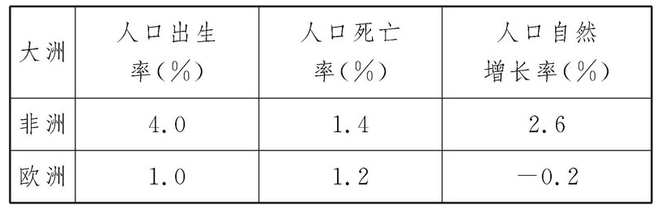
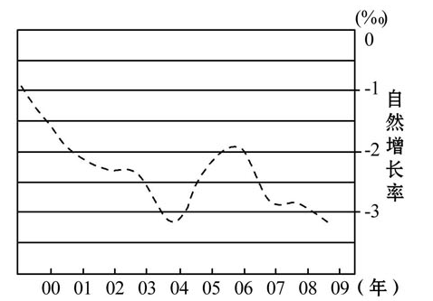
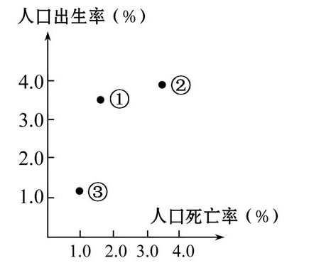
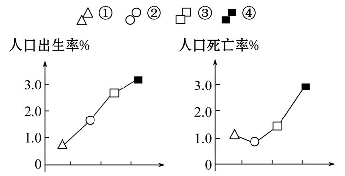
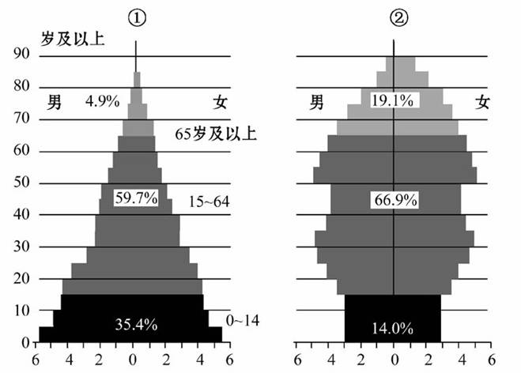
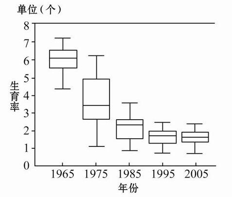

None - Fade - Slide - Convex - Concave - Zoom
选择班级
幻灯片样式
Black (default) -
White -
League -
Sky -
Beige -
Simple
Serif -
Blood -
Night -
Moon -
Solarized
1．10万年以来世界人口数量不断增长,但是在不同的历史时期,人口数量增长的特点是不相同的,对此下列说法正确的是
A．农业革命之前,人口数量增长较快
B．农业革命之后,人口数量高速增长,一直到工业革命前
C．从农业革命到工业革命前,人口数量总体来说在增加,但后期速度减慢甚至停止增长
D．工业革命后,人口数量减少
2.非洲人口增长模式属于（ ）
A.原始型人口增长模式
B.传统型人口增长模式
C.现代型人口增长模式
D.不能确定
3.欧洲人口自然增长率低的主要原因是（ ）
A.经济发展水平和文化水平较高
B.人们的生育意愿较高
C.资源贫乏，人口合理容量最高
D.人们的离婚率较低
4．世界人口增长模式的转变顺序是（ ）
A．原始型→传统型→现代型
B．传统型→现代型→原始型
C．原始型→现代型→传统型
D．传统型→原始型→现代型
5．一个地区人口增长模式的转变，主要受到下列哪个因素的影响（ ）
A．生产力水平
B．社会福利
C．文化观念
D．自然环境
上海市2000年以来出生率在6‰以下，死亡率在8‰以下。下图是2000～2009年以来上海市人口自然增长率变化示意图，据此回答6、7题。
6．上海市人口增长模式属于（ ）
A．原始型
B．现代型
C．高增长型
D．增长下降型
7．从图中可知上海市存在的人口问题是（ ）
A．人口老龄化严重
B．人口性别比例失调
C．青少年比重过大
D．人口的文化素质较低
8.（2010·山东学业水平测试）读图连线。图中①、②、③表示不同的人口增长模式。将①、②、③与其对应的人口增长模式和典型分布地区连接起来。
① A“高高低”模式 a非洲大多数国家
② B“高低高”模式 b西欧发达国家
③ C“低低低”模式 c热带雨林的原始部落
①—B—a ②—A—c ③—C—b
（2010·鹤壁高一检测）下图为某国人口自然增长率变化折线图，纵坐标起点为零。读图完成1、2题。
1．该国人口数量达到最大值的时间为（ ）
A．1
B．2
C．3
D．4
2．下列各国中人口发展状况与上图所示人口增长类型一致的是（ ）
A．德国
B．中国
C．印度
D．朝鲜
3.图中①②③④代表的国家人口增长符合欧洲发达国家现状的是（ ）
A.①
B.②
C.③
D.④
4.欧洲某国法律规定：对独身者收取高达自身收入5%至10%的税率。其初衷是（ ）
A.鼓励生育
B.抑制人口快速增长
C.以税养老
D.平衡人口性别差异
5．人口增长模式由“高-低-高”开始向“低-低-低”转变的标志是（ ）
A．死亡率快速下降，出生率基本不变
B．死亡率和出生率进一步下降
C．死亡率上升，出生率不变
D．出生率、死亡率同时上升
6.下列有关两个国家人口的说法，错误的是（ ）
A.两个国家的老龄人口男性比女性多
B.①国就业压力大
C.②国社会养老负担重
D.两个国家人口增长模式不同
7.这两个国家最有可能是（ ）
A.①俄罗斯 ②印度
B.①德国 ②日本
C.①肯尼亚 ②法国
D.①英国 ②巴西
（2010·上海模拟）下图是我国不同年代妇女生育子女数分布的盒形图，盒内的分隔线为中位数，线段向上至最大值，向下至最小值。据此回答8、9题。
8.该图可说明的是（ ）
A.我国人口增长率有加快的趋势
B.我国人口总量有减少的趋势
C.我国人口出生率有下降的趋势
D.我国人口生育率的省际差异有增
大的趋势
9.影响我国生育率变化特点的主要原因是（ ）
A.生育观念
B.人口受教育水平
C.人口老龄化
D.国家人口政策